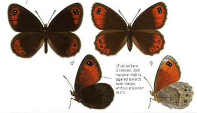
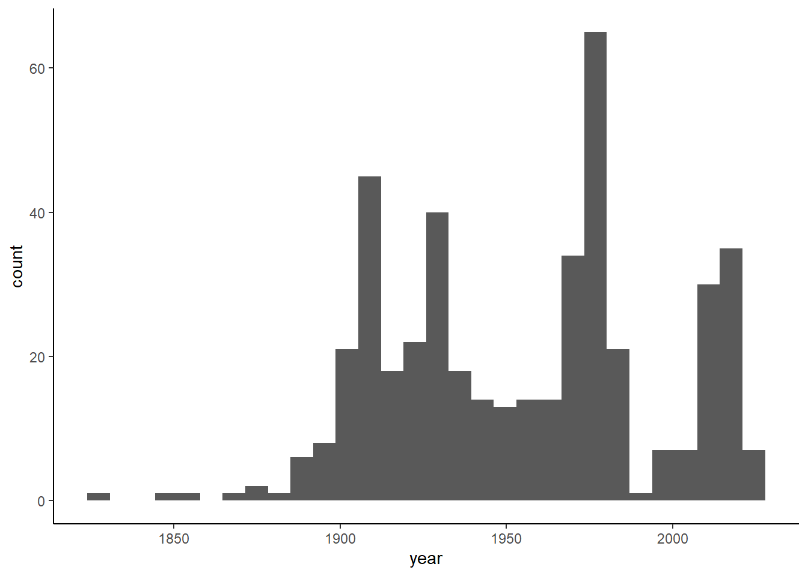
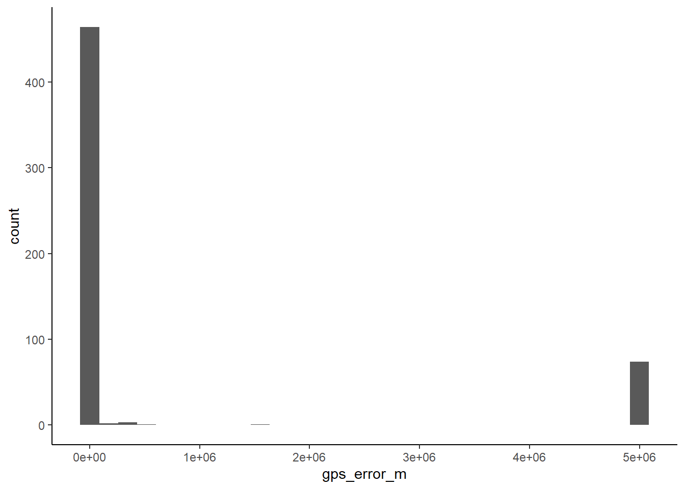

install.packages("rgbif")
install.packages("tidyverse")
Note
This document was last updated on 16 november 2023 and created with R version 4.3.1 (2023-06-16 ucrt) and packages: rgbif 3.7.7, tidyverse 2.0.0, ggplot2 3.4.2, leaflet 2.2.0.9000 and terra 1.7.37.
Summary
In this lab you will:
- use R code to access species occurrence data on GBIF server and download it,
- filter and select data to retain only information of interest,
- learn how to simulate pseudo-absence points in areas around species presences,
- create an interactive map of spatial points.
Before we start
Task
Create new R project following Lab 2 of Intro to R, and name it
Introduction to species distribution models,Create folders
01_data,02_scripts,03_results,Open new R script and save it as
Erebia stirius.When following this lab, copy & paste the code so it is organised as it is in the teaching materials.
Lab plan


Occurence data for distribution models
Occurrences of organisms can be collected from multiple sources (see Guisan et al., 2017, pp. 111):
- Field data,
- Tracking data,
- Literature data,
- Herbarium and museum data or
- Databases (that can contain all of the above).
The minimum number of presences ought to be more than 30 (as model performance declines severely, if fewer than), while sample size effects usually become less critical above 50 presences. Additionally, for more robust parameter estimation, a rule of thumb is to have a minimum of ten presence observations available per environmental variable used. Guisan et al. (2017) advises this minimum to be raised to 20 - 50 observations per predictor (depending on the complexity of the models to be built).
We will take advantage of obtaining occurrences provided by a global and freely accessible database Global Biodiversity Information Facility - GBIF. GBIF is an international network and data infrastructure funded by the world’s governments and aimed at providing anyone, anywhere, open access to data about all types of life on Earth. More about GBIF database you can find here.
Our lab will be focused on a butterfly species of Erebia genus:

- Erebia stirius - Stirian ringlet: endemic to the area between the SE Alps and the N Dinaric Alps, where it inhabits grassy, rocky slopes, between 700 and 1800 m. Caterpillars feed mainly on the grass species Sesleria caerulea. The species is listed as Least Concerned by the IUCN (link)

We will access the occurrence data straight from R with using occ_search() function from rgbif package to download the data from the portal. To do this for E. stirius we have to set argument scientificName = "Erebia stirius".
library(rgbif)
library(tidyverse)
# access data: Erebia stirius and assign it to object stirius_gbif
stirius_gbif <- occ_search(scientificName = "Erebia stirius",
# increase the default number of retrieved
# locations to 1000
limit = 1000) The downloaded dataset is a list from which we extract only data element with the $ sign:
stirius <- stirius_gbif$data
Task
Click on the stirius_gbif and explore the dataframe. What are the columns that are useful to us and which do not seem important?
When we examine the returned data frame, there are many columns, that seem to have no particular meaning for us. So we will select only those, that we might need for further investigation or use. For sure we need GPS coordinates (decimalLatitude and decimalLongitude) while along with that, we will extract the error of the GPS coordinates (coordinateUncertaintyInMeters), year of publishing the record, basis of record (basisOfRecord). Remember that within select() we can rename columns in the same step (lat = and lon = for example) and using %>% operator we chain operations, meaning that the subsequent operations will be executed on the object preceding the operator (detailed description of chaining operator can be found in Lab 5 of Intro to R).
Warning
Functions select() and filter() are defined in multiple R packages. Depending on which package was loaded last by library(), R chooses which version of the function it will apply. If we do not get the expected result from the function or an unexpected error after running it, this is the likeliest cause.
Tip
We can avoid problems with commonly named functions by telling R a priori which function from which package we want to use. For example, select() or filter() from dplyr as follows:
dplyr::filter(),dplyr::select().
stirius <- stirius %>%
dplyr::select(species,
lat = decimalLatitude,
lon = decimalLongitude,
gps_error_m = coordinateUncertaintyInMeters,
year,
record_origin = basisOfRecord)Next steps in occurrence data preparation is to:
- exclude all NA values in the GPS coordinates (with
drop_na()fromtidyr), as if we do not have coordinates, we cannot use these occurrences in the analysis.
stirius <- stirius %>%
tidyr::drop_na(lat, lon) - examine the year when the record was published and decide, what year range we will include (i.e. very old records might be biased due to differences in environmental conditions)
library(ggplot2)
ggplot(stirius, aes(x = year)) +
geom_histogram() +
theme_classic()
- examine record origin (if museum, we need to check that location provided is not museum location!),
table(stirius$record_origin)
HUMAN_OBSERVATION LIVING_SPECIMEN MATERIAL_CITATION MATERIAL_SAMPLE
67 1 119 2
OCCURRENCE PRESERVED_SPECIMEN
352 44 - examine gps errors and decide, what to do with records with large location error (i.e. more than 5 km).
ggplot(stirius, aes(x = gps_error_m)) +
geom_histogram() +
theme_classic()
And retain only the observations that satisfy our criteria. For later convenience, we will also add a column ID with consecutive numbers starting from 1.
stirius <-
stirius %>%
filter(
year > 1950, # retain only records after 1950
# retain observations and occurences
record_origin %in% c("HUMAN_OBSERVATION", "OCCURRENCE"),
gps_error_m <= 5000 # with 5000 m or less error
)
stirius <- stirius %>%
# add an ID column: numbers from 1 to max number of rows
mutate(ID = seq(1:nrow(stirius)))Lastly, lets check the properties of our data frame:
str(stirius)tibble [154 × 7] (S3: tbl_df/tbl/data.frame)
$ species : chr [1:154] "Erebia parmenio" "Erebia parmenio" "Erebia parmenio" "Erebia parmenio" ...
$ lat : num [1:154] 45.8 45.7 46 46.4 46.4 ...
$ lon : num [1:154] 11.2 10.8 10.7 13.6 13.6 ...
$ gps_error_m : num [1:154] 61 184 25 25 26 6 25 50 20 50 ...
$ year : int [1:154] 2022 2022 2022 2021 2021 2021 2020 2020 2020 2020 ...
$ record_origin: chr [1:154] "HUMAN_OBSERVATION" "HUMAN_OBSERVATION" "HUMAN_OBSERVATION" "HUMAN_OBSERVATION" ...
$ ID : int [1:154] 1 2 3 4 5 6 7 8 9 10 ...summary(stirius) species lat lon gps_error_m
Length:154 Min. :45.27 Min. :10.68 Min. : 2
Class :character 1st Qu.:45.80 1st Qu.:13.20 1st Qu.: 25
Mode :character Median :46.37 Median :13.72 Median : 500
Mean :46.20 Mean :13.44 Mean :1614
3rd Qu.:46.44 3rd Qu.:14.02 3rd Qu.:5000
Max. :47.62 Max. :15.15 Max. :5000
year record_origin ID
Min. :1951 Length:154 Min. : 1.00
1st Qu.:1972 Class :character 1st Qu.: 39.25
Median :1981 Mode :character Median : 77.50
Mean :1989 Mean : 77.50
3rd Qu.:2013 3rd Qu.:115.75
Max. :2022 Max. :154.00 Map occurences with leaflet interactive maps
Now that we have downloaded the data, we will display them on a map, so we get a feeling of where our two species have been observed. For that we will use leaflet package which provides us an easy way for creating interactive maps. It functions similar to creating plots with ggplot, the difference is that we add new layers to the plots with %>% operator. The basic function for mapping is leaflet() inside which we specify data object we want to plot, in our case stirius. With addProviderTiles() we add background to our map and with argument provider = "Esri.WorldImagery" we specify which type of background. You can explore other options for background here. You can change the background by replacing "Esri.WorldImagery" with another name, i.e. "OpenTopoMap". Next we add our points with function addCircleMarkers(), within which we must specify names of columns in our data that represent longitude (lon) and latitude (lat) preceeded by the ~ sign.
install.packages("leaflet")library(leaflet) # fast, simple and efficient interactive mapping
leaflet(stirius) %>%
addProviderTiles(provider = "Esri.WorldImagery") %>%
addCircleMarkers(lng = ~lon,
lat = ~lat)
Task
To confirm whether the occurence locations are reliable, we should compare them with the known distribution range of the species. Do this map reflect the species distribution according to IUCN?
However, there are some points, that don’t seem OK:
- one is located at the center of Garda lake,
- another is located at the Adriatic coast (there seem to be more occurences here, as the point is not transparent).
Lets adapt the map a bit, to figure out which points in the data these two are. We will add the label = argument, that will pop-up the ID of each point, when we hover over:
leaflet(stirius) %>%
addProviderTiles(provider = "Esri.WorldImagery") %>%
addCircleMarkers(lng = ~lon,
lat = ~lat,
label = ~ID) # pop up with the ID numberWe will remove this two as they seem erroneous. Within filter() we will use ! to retain the inverse of the IDs we will provide (I added also the ID 82 & 83, as both lie directly below the record number 104):
stirius <- stirius %>%
dplyr::filter(!ID %in% c(82, 83, 114, 140))Now redraw the map, to see if it was successful:
leaflet(stirius) %>%
addProviderTiles(provider = "Esri.WorldImagery") %>%
addCircleMarkers(lng = ~lon,
lat = ~lat,
label = ~ID) # pop up with the ID number
Questions to consider
How reliable is the data obtained from GBIF?
Should we put more considerations on the origin of the occurrence data? For example, is it coming from research studies or was it provided by the citizen scientists?
In general, what are the main possible errors or biases that can be present in collecting species occurrence data?
Absences and what to do if we don’t have them
Real absences are hard to obtain in most cases (i.e. species present, but not detected; research areas to big to monitor all available area, etc.). For that reason, there are multiple options to generate pseudo-absences, depending on the species, type of data, research question, scale of inference (global, regional, local):
- background,
- buffer,
- Correlated Random Walks,
- reverse Correlated Random Walks,
- other.

For simplicity, we will use the buffer method, meaning that we will create polygons with certain diameter around our points. In order to perform spatial operations on our data, we need to transform it into appropriate spatial format,in our case this will be vector format (vect() function) from terra package. This is followed by creating a buffer around our points with buffer() function and set the width of the polygons around our points to (width =) to 25 km (25000). Note that 25 km buffer width is an arbitrary number, which I chose based on the assumed dispersal potential of the butterfly species. When creating buffers it is crucial, that we choose a distance, that is biologically or ecologically sensible. For example, whales can travel tens of km per day, while a mole will likely spend its entire lifespan within a single small or medium meadow. Last step in buffer preparation is to aggregate (dissolve) individual polygons, so we end up with a union of all created polygons.
install.packages("terra")library(terra)
stirius_buffer <- stirius %>%
vect(geom = c("lon", "lat"), crs = "+proj=longlat +datum=WGS84") %>%
buffer(width = 25000) %>% # create 25 km buffer
aggregate()Lets map the created buffer with leaflet, this time instead of mapping points we add a the buffer layer with addPolygons() function without any additional arguments:
leaflet(stirius_buffer) %>%
addProviderTiles(provider = "Esri.WorldImagery") %>%
addPolygons()The pseudo absence points can be created using spatSample() function, that performs random sampling within the buffer provided (stirius_buffer_tr). The second argument tells the function, how many points we want to create. At this step, there are many considerations, that need to be taken into account, as the subsequent results can depend heavily on the number of points that we decide to sample (Barbet-Massin et al., 2012, Fieberg et al., 2021). We will keep it simple and create the same number of pseudo absences as we have presences (nrow(stirius) = 150). We will save these points into object stirius_abs:
stirius_abs <- spatSample(stirius_buffer,
size = nrow(stirius))
class(stirius_abs)[1] "SpatVector"
attr(,"package")
[1] "terra"Before displaying the points on a map, we need to change the stirius_abs from terra format to a regular data frame. For that, we extract the coordinates from the object stirius_abs (terra::geom()) and change it to dataframe (as.data.frame()):
stirius_abs_df <- as.data.frame(terra::geom(stirius_abs))
class(stirius_abs_df)[1] "data.frame"With head() function, we display the first six rows of the dataframe, and we can note that the coordinates are stored in columns x and y:
head(stirius_abs_df) geom part x y hole
1 1 1 10.82532 45.62689 0
2 2 1 12.32960 46.40491 0
3 3 1 12.49578 46.46411 0
4 4 1 12.56477 46.22901 0
5 5 1 10.50456 45.68792 0
6 6 1 15.11227 45.06994 0And map them, to see where they were created:
leaflet(stirius_abs_df) %>%
addProviderTiles(provider = "Esri.WorldImagery") %>%
addCircleMarkers(lng = ~x,
lat = ~y,
color = "red")Finalising presence absence datasets
There is one more step in preparation of presences of E. stirius (stirius) dataset. We need to add a column (new variable) that will denote that this are points, where species is present (1). As we will not need other variables, we will select only species, both coordinates and presence columns:
library(dplyr)stirius <- stirius %>%
# create new column, denoting this are points where species is present
dplyr::mutate(presence = 1) %>%
dplyr::select(
species,
lat,
lon,
presence
)The same step is needed in preparation of pseudo-absences, only this time time we need to add a column (new variable) that will denote that this are points, where the species is not present (0), or better said points that we have created as pseudo absences. As we will not need other variables, we will select only species, both coordinates (and rename them to lat and lon) and presence column:
#stirius_abs_df <- readRDS("01_data/stirius_abs_df.RDS")
stirius_abs_df <- stirius_abs_df %>%
dplyr::mutate(species = "Erebia parmenio", # create now column with species name
# create new column, denoting this are points where species is pseudo absent
presence = 0) %>%
dplyr::select(
species,
lat = y, # rename y to lat
lon = x, # rename x to lon
presence
)In this last step today, we will merge the two dataframes together. Above steps prepared them to contain columns with the same names and the same information, which is a prerequisite for merging. We use rbind() function, which binds (merges) two tables in a way, that the first data frame is continued by the second, retaining the same number of columns as original data frame:
head(stirius) ; head(stirius_abs_df)# A tibble: 6 × 4
species lat lon presence
<chr> <dbl> <dbl> <dbl>
1 Erebia parmenio 45.8 11.2 1
2 Erebia parmenio 45.7 10.8 1
3 Erebia parmenio 46.0 10.7 1
4 Erebia parmenio 46.4 13.6 1
5 Erebia parmenio 46.4 13.6 1
6 Erebia parmenio 46.4 13.6 1 species lat lon presence
1 Erebia parmenio 45.62689 10.82532 0
2 Erebia parmenio 46.40491 12.32960 0
3 Erebia parmenio 46.46411 12.49578 0
4 Erebia parmenio 46.22901 12.56477 0
5 Erebia parmenio 45.68792 10.50456 0
6 Erebia parmenio 45.06994 15.11227 0stirius_pa <- rbind(stirius_abs_df, stirius)Export the data
We will export the presence absence dataframe and the buffer, so they will be available to us in the following labs, when we will need it.
saveRDS(stirius_pa, "01_data/stirius_pa.RDS")
saveRDS(stirius_buffer, "01_data/stirius_buffer.RDS")Assignment
Task
Create new R script and name it as the species you choose to work on.
Copy - paste the code from the
Erebia stiriusscript to your empty script.Adapt the code to achieve the following:
3.1) download the data for your species from GBIF,
3.2) filter the data to retain only reliable occurrence locations,
3.3) create a spatial buffer around occurrences and sample pseudo-absence within it,
3.4) merge the presence and pseudo-absence dataframes, and export them to the hard drive (also the buffer),
3.5) save the script with the code for your species,
3.6) make sure that the project folder will be available to you next week at the labs (either store it on usb, cloud or similar, in case it gets deleted from computers).